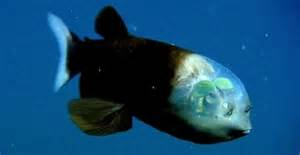

TITOLOPL
Avvistato per la prima volta nel 1939 il pesce Macropinna microstoma, che abita nel mare al largo della California, con il suo cranio trasparente era rimasto un mistero a lungo. Ma dopo vari studi un gruppo di ricercatori di Monterey Bay Aquarium Research Institute ha finalmente svelato i suoi segreti.
Vivendo negli oscuri fondali marini, fino a 800 metri, questo buffo pesce ha sviluppato una vista speciale, grazie alla forma degli occhi e al cranio trasparente. Che gli permettono di raccogliere e immagazzinare tutta la luce necessaria per vedere anche nella semi oscurità. Gli occhi inoltre possono muoversi, secondo gli scienziati, all’interno della copertura trasparente, permettendo di controllare tutto quello che gira loro intorno. In particolare le prede, piccoli pesci di cui si nutrono e che catturano con manovre molto veloci e precise. La calotta trasparente rende perfettamente visibili tutti gli organi interni della sua testa, conferendo all’animale un buffo aspetto.